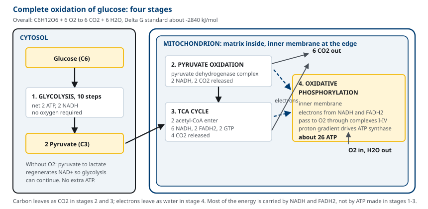
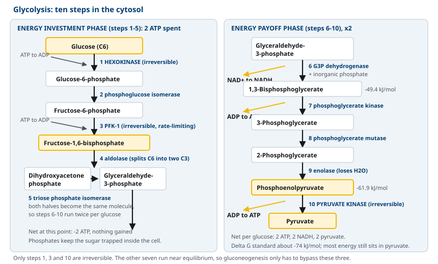
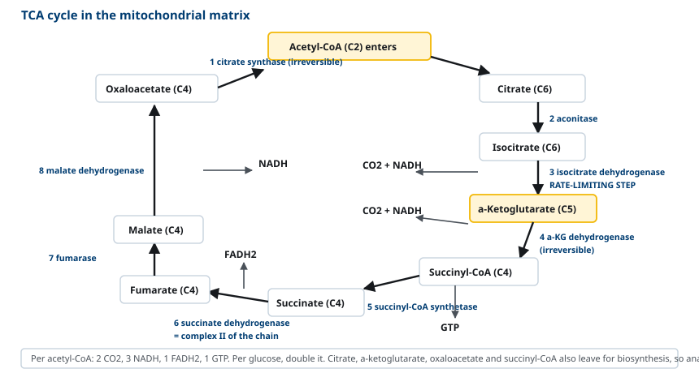
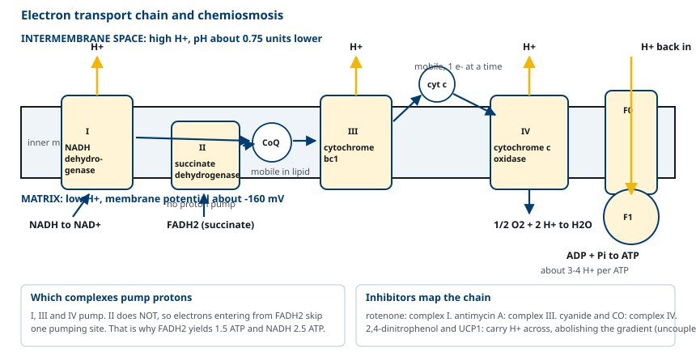
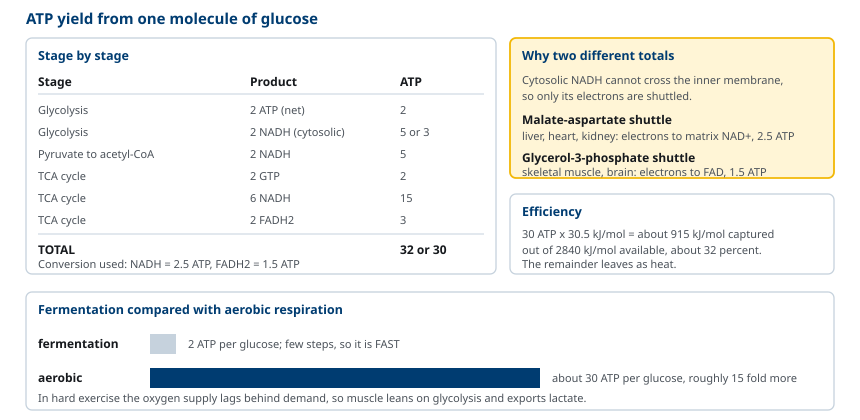
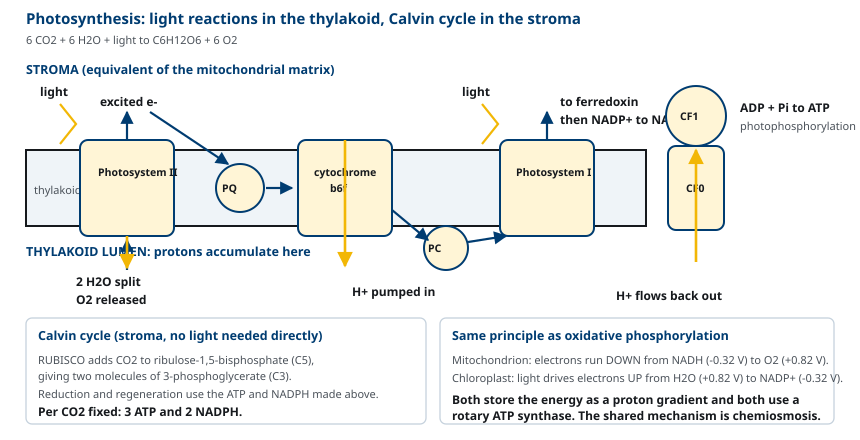

M01-W06-L01 · 인체일반생물학과 기초세포생물학
Glycolysis·oxidative phosphorylation과 광합성 개요
Glycolysis, Oxidative Phosphorylation and an Overview of Photosynthesis
학습목표
- 포도당의 완전 산화를 네 단계로 나누어 각 단계의 세포 내 위치와 산물을 설명한다.
- Glycolysis 10단계를 에너지 투입기와 수확기로 나누어 설명하고 알짜 수지를 쓴다.
- Phosphofructokinase-1이 rate-limiting step인 이유와 allosteric 조절을 설명한다.
- Pyruvate dehydrogenase 복합체와 TCA cycle의 산물을 수지로 정리한다.
- Electron transport chain의 네 복합체를 전위 순서로 배열하고 양성자 펌프 지점을 밝힌다.
- Chemiosmotic 가설과 ATP synthase의 작동 원리를 실험적 근거와 함께 설명한다.
- 포도당 한 분자의 ATP 수지를 계산하고 shuttle에 따른 차이를 설명한다.
- 광합성의 명반응과 암반응을 oxidative phosphorylation과 비교해 공통 원리를 밝힌다.
선수지식
- M01-W05-L03 생체에너지: 자유에너지와 ATP — ΔG, 짝반응, 산화환원 전위, 효소 조절
- M01-W05-L02 생체분자와 막의 구조 — 막의 투과성, 막단백질, 수송
- M01-W05-L01 세포의 기원·진화와 세포 연구 방법 — 미토콘드리아의 이중막 구조
강의 구성
- 1. 포도당 산화의 전체 구조
- 2. Glycolysis: 열 단계와 알짜 수지
- 3. Glycolysis의 조절과 pyruvate의 운명
- 4. Pyruvate dehydrogenase와 TCA cycle
- 5. Electron transport chain의 구성
- 6. Chemiosmosis와 ATP synthase
- 7. 포도당 한 분자의 ATP 수지
- 8. 광합성: 명반응과 암반응
1. 포도당 산화의 전체 구조
포도당이 CO₂와 물로 완전히 산화될 때의 전체 반응과 자유에너지는 다음과 같다.
C₆H₁₂O₆ + 6 O₂ → 6 CO₂ + 6 H₂O, ΔG°′ = −2,840 kJ/mol
이 에너지를 한 번에 열로 내보내면 세포에는 쓸모가 없다. 세포는 이 산화를 여러 단계로 나누어 에너지를 조금씩 꺼내고, 그 가운데 상당 부분을 ATP와 전자 운반체에 담는다. 네 단계로 나누어 본다.
| 단계 | 위치 | 출발 → 도착 | 직접 산물 | 전자 운반체 |
|---|---|---|---|---|
| 1. Glycolysis | 세포질 | 포도당(C6) → pyruvate(C3) ×2 | ATP 2 | NADH 2 |
| 2. Pyruvate oxidation | 미토콘드리아 기질 | pyruvate → acetyl-CoA + CO₂ | — | NADH 2 |
| 3. TCA cycle | 미토콘드리아 기질 | acetyl-CoA → 2 CO₂ | GTP 2 | NADH 6, FADH₂ 2 |
| 4. Oxidative phosphorylation | 미토콘드리아 내막 | NADH·FADH₂의 전자 → O₂ | ATP 약 26 | — |
단계 1~3에서 만들어지는 ATP는 적다. 대부분의 에너지는 NADH와 FADH₂의 전자에 담기고, 그 전자가 4단계에서 O₂로 흐를 때 ATP가 만들어진다. 즉 포도당 산화는 탄소를 CO₂로 보내고 전자를 O₂로 보내는 과정이며, 두 흐름이 서로 다른 곳에서 끝난다.
산소가 없으면 4단계가 멈추고, NADH가 NAD⁺로 재산화되지 않는다. NAD⁺가 없으면 glycolysis도 멈추므로, 혐기 조건에서 세포는 다른 방법으로 NAD⁺를 되돌려야 한다. 그것이 발효다.

2. Glycolysis: 열 단계와 알짜 수지
Glycolysis는 포도당 한 분자를 pyruvate 두 분자로 쪼개는 세포질의 열 단계 경로다. 산소를 쓰지 않고, 모든 생물에 보존되어 있어 가장 오래된 대사 경로로 추정된다. 열 단계를 두 묶음으로 나누면 구조가 보인다.
에너지 투입기(1~5단계) ATP를 두 개 쓴다. 목적은 포도당을 쪼갤 수 있는 형태로 바꾸는 것이다.
1. Glucose → glucose-6-phosphate. Hexokinase(간은 glucokinase). ATP 소모. 인산기가 붙으면 음전하 때문에 막을 통과하지 못해 세포 안에 갇힌다. 2. Glucose-6-phosphate ⇌ fructose-6-phosphate. Phosphoglucose isomerase. 6각 고리가 5각 고리로 바뀌어 C1에 인산을 받을 준비가 된다. 3. Fructose-6-phosphate → fructose-1,6-bisphosphate. Phosphofructokinase-1(PFK-1). ATP 소모. 비가역이며 이 경로의 rate-limiting step이다. 4. Fructose-1,6-bisphosphate → dihydroxyacetone phosphate + glyceraldehyde-3-phosphate. Aldolase. 분자가 둘로 쪼개진다. 5. Dihydroxyacetone phosphate ⇌ glyceraldehyde-3-phosphate. Triose phosphate isomerase. 두 조각이 같은 분자가 되어 이후 단계가 하나로 통일된다.
에너지 수확기(6~10단계) 조각 하나당 ATP 두 개와 NADH 하나를 얻는다. 조각이 둘이므로 전체로는 ATP 4개, NADH 2개다.
6. Glyceraldehyde-3-phosphate → 1,3-bisphosphoglycerate. Glyceraldehyde-3-phosphate dehydrogenase. 산화와 인산화가 동시에 일어난다. NAD⁺가 NADH로 환원되고, 무기인산이 결합해 전이 능력이 큰 화합물(−49.4 kJ/mol)이 만들어진다. 7. 1,3-Bisphosphoglycerate → 3-phosphoglycerate. Phosphoglycerate kinase. ATP 생성. 기질의 인산기를 ADP로 직접 넘기므로 substrate-level phosphorylation이다. 8. 3-Phosphoglycerate ⇌ 2-phosphoglycerate. Phosphoglycerate mutase. 9. 2-Phosphoglycerate → phosphoenolpyruvate. Enolase. 물이 떨어져 나가 전이 능력이 −61.9 kJ/mol로 매우 큰 화합물이 된다. 10. Phosphoenolpyruvate → pyruvate. Pyruvate kinase. ATP 생성. 비가역이다.
알짜 수지는 다음과 같다.
Glucose + 2 NAD⁺ + 2 ADP + 2 Pᵢ → 2 pyruvate + 2 NADH + 2 H⁺ + 2 ATP + 2 H₂O
ATP 네 개가 만들어지고 두 개가 소모되어 알짜 2개다. 반응 전체의 ΔG°′는 약 −74 kJ/mol로 포도당이 가진 에너지의 일부만 꺼낸다. 남은 에너지는 pyruvate의 결합에 그대로 남아 있다.

세 지점이 비가역이다. Hexokinase, PFK-1, pyruvate kinase 반응이다. 나머지 일곱 단계는 평형에 가까워 양방향으로 작동하므로, gluconeogenesis는 이 세 지점만 다른 효소로 우회하면 된다.
3. Glycolysis의 조절과 pyruvate의 운명
PFK-1이 조절의 중심이다. 비가역이고, 경로에서 처음으로 glycolysis에만 쓰이는 단계이기 때문이다. 조절자는 포도당 농도가 아니라 세포의 에너지 상태와 탄소 공급 상태를 반영한다.
| 조절자 | 방향 | 의미 |
|---|---|---|
| ATP | 억제 | 에너지가 충분하면 경로를 줄인다 |
| AMP, ADP | 활성화 | 에너지가 부족하면 경로를 늘린다 |
| Citrate | 억제 | TCA cycle 중간체가 쌓였으면 유입을 줄인다 |
| H⁺(낮은 pH) | 억제 | lactate가 쌓여 산성화되면 경로를 멈춘다 |
| Fructose-2,6-bisphosphate | 강력한 활성화 | 간에서 insulin 신호를 전달한다 |
Fructose-2,6-bisphosphate는 경로의 중간체가 아니라 조절 전용 분자다. 한 효소의 두 활성 부위(phosphofructokinase-2와 fructose-2,6-bisphosphatase)가 이 분자를 만들고 없애며, 그 균형이 인산화로 조절된다. Insulin은 이 분자를 늘려 glycolysis를 켜고, glucagon은 줄여 glycolysis를 끄고 gluconeogenesis를 켠다.
Hexokinase와 glucokinase의 차이도 조절의 한 부분이다.
| 항목 | Hexokinase (대부분 조직) | Glucokinase (간, 췌장 β세포) |
|---|---|---|
| K_m | 약 0.1 mM | 약 10 mM |
| 포도당 농도 민감도 | 낮은 농도에서도 포화 | 혈당이 올라갈 때 활성이 올라간다 |
| Glucose-6-phosphate 억제 | 받는다 | 받지 않는다 |
| 역할 | 조직 자체의 에너지 확보 | 혈당 완충, 혈당 감지 |
혈당이 정상(약 5 mM)이면 glucokinase는 절반도 포화되지 않지만, 식후 문맥 혈당이 올라가면 활성이 비례해 올라가 간이 포도당을 흡수한다. 즉 간은 혈당 조절 장치로서 설계되어 있다.
Pyruvate의 운명은 세 가지다. 어느 쪽으로 갈지는 산소 공급과 조직의 종류가 정한다.
- Acetyl-CoA: 산소가 있을 때. Pyruvate dehydrogenase 복합체가 미토콘드리아에서 촉매한다.
- Lactate: 산소가 부족할 때. Lactate dehydrogenase가 pyruvate를 환원하면서 NADH를 NAD⁺로 되돌린다. ATP를 더 만들지는 않고, 다만 NAD⁺를 되돌려 glycolysis가 계속 돌게 한다. 적혈구는 미토콘드리아가 없어 산소가 있어도 항상 이 경로를 쓴다.
- Ethanol과 CO₂: 효모의 알코올 발효. 사람에게는 없다.
4. Pyruvate dehydrogenase와 TCA cycle
Pyruvate는 수송체를 통해 미토콘드리아 기질로 들어가 pyruvate dehydrogenase 복합체(PDH)를 만난다. 이 복합체는 세 종류의 효소와 다섯 가지 보조인자(thiamine pyrophosphate, lipoamide, FAD, NAD⁺, coenzyme A)로 이루어진 거대 구조다. 반응은 하나지만 세 가지 변화가 함께 일어난다.
Pyruvate + CoA + NAD⁺ → acetyl-CoA + CO₂ + NADH, ΔG°′ = −33.5 kJ/mol
decarboxylation으로 CO₂가 떨어지고, 남은 두 탄소가 산화되어 NADH가 생기고, 그 acetyl기가 coenzyme A에 thioester로 붙는다. 비가역이다. 그래서 지방산과 포도당은 acetyl-CoA로 바뀔 수 있지만 acetyl-CoA에서 포도당으로 돌아갈 수 없다.
PDH는 인산화로 조절된다. PDH kinase가 인산화하면 비활성, PDH phosphatase가 탈인산화하면 활성이다. Acetyl-CoA와 NADH가 kinase를 활성화하므로 산물이 쌓이면 경로가 꺼지고, Ca²⁺와 insulin은 phosphatase를 활성화해 경로를 켠다.
TCA cycle은 acetyl-CoA의 두 탄소를 CO₂ 두 개로 산화하는 여덟 단계의 순환이다. 핵심 구조는 다음과 같다.
1. Acetyl-CoA(C2)가 oxaloacetate(C4)와 결합해 citrate(C6)가 된다. Citrate synthase. 비가역이며 유입량을 정한다. 2. Citrate → isocitrate. Aconitase. 3. Isocitrate → α-ketoglutarate(C5) + CO₂ + NADH. Isocitrate dehydrogenase. 첫 decarboxylation이며 순환의 rate-limiting step이다. ADP에 활성화되고 NADH·ATP에 억제된다. 4. α-Ketoglutarate → succinyl-CoA(C4) + CO₂ + NADH. α-Ketoglutarate dehydrogenase. PDH와 같은 구조와 보조인자를 쓴다. 비가역. 5. Succinyl-CoA → succinate + GTP. Succinyl-CoA synthetase. 순환에서 유일한 substrate-level phosphorylation. 6. Succinate → fumarate + FADH₂. Succinate dehydrogenase. 이 효소만 내막에 박혀 있고 electron transport chain의 복합체 II와 동일하다. 7. Fumarate → malate. Fumarase. 8. Malate → oxaloacetate + NADH. Malate dehydrogenase. 순환이 닫힌다.
Acetyl-CoA 한 분자당 산물은 CO₂ 2개, NADH 3개, FADH₂ 1개, GTP 1개다. 포도당 한 분자는 acetyl-CoA 두 개를 내므로 두 배가 된다.

TCA cycle은 산화 경로이면서 동시에 생합성의 출발점이다. Citrate는 세포질로 나가 지방산과 cholesterol 합성에 쓰이고, α-ketoglutarate와 oxaloacetate는 아미노산으로 전환되며, succinyl-CoA는 heme 합성에 쓰인다. 중간체가 빠져나가면 순환이 멈추므로 보충이 필요하다. 이 보충 반응을 anaplerotic 반응이라 하며, pyruvate carboxylase가 pyruvate를 oxaloacetate로 바꾸는 반응이 가장 중요하다.
5. Electron transport chain의 구성
NADH와 FADH₂에 담긴 전자는 미토콘드리아 내막의 네 복합체를 거쳐 O₂로 전달된다. 배열 순서는 환원 전위가 낮은 쪽에서 높은 쪽이다.
| 복합체 | 이름 | 전자 입력 | 전자 출력 | 양성자 펌프 |
|---|---|---|---|---|
| I | NADH dehydrogenase | NADH | ubiquinone | 예 |
| II | Succinate dehydrogenase | FADH₂(succinate) | ubiquinone | 아니오 |
| III | Cytochrome bc₁ complex | ubiquinol | cytochrome c | 예 |
| IV | Cytochrome c oxidase | cytochrome c | O₂ → H₂O | 예 |
두 가지 운반체가 복합체 사이를 잇는다. Ubiquinone(CoQ)은 지질에 녹아 내막 안을 움직이며 복합체 I·II에서 III로 전자를 옮긴다. Cytochrome c는 막 사이 공간에서 수용성 단백질로 움직이며 III에서 IV로 전자를 하나씩 옮긴다.
복합체 I, III, IV는 전자 전달의 자유에너지로 양성자를 기질에서 막 사이 공간으로 퍼낸다. 복합체 II는 펌프 기능이 없다. 그래서 FADH₂의 전자는 복합체 I을 건너뛰어 ubiquinone으로 들어가며, 양성자 펌프 지점을 하나 덜 거친다. 이것이 NADH와 FADH₂의 ATP 수확이 다른 이유다.
복합체 IV는 전자 네 개와 O₂ 한 분자, H⁺ 네 개로 물 두 분자를 만든다. 산소가 네 전자를 모두 받기 전에 중간 단계에서 떨어져 나오면 superoxide(O₂⁻)가 생기는데, 복합체 IV는 중간 산물을 금속 중심에 붙잡아 이것을 최소화한다. 그래도 일부가 새어 나와 반응성 산소종(reactive oxygen species, ROS)이 되고, superoxide dismutase, catalase, glutathione peroxidase가 처리한다.
억제제의 작용 지점을 알면 사슬의 구조를 확인할 수 있다. Rotenone은 복합체 I, antimycin A는 복합체 III, cyanide와 CO는 복합체 IV를 차단한다. 복합체 IV가 막히면 그 앞의 모든 운반체가 환원 상태로 쌓이고 전자 흐름이 완전히 멈춘다.
6. Chemiosmosis와 ATP synthase
전자 전달이 어떻게 ATP 합성과 연결되는가. 1961년 Peter Mitchell의 chemiosmotic 가설이 답을 주었다. 전자 전달의 에너지는 고에너지 화학 중간체로 저장되는 것이 아니라, 내막을 가로지르는 양성자의 전기화학적 기울기로 저장된다.
이 기울기는 두 성분으로 이루어진다. 양성자 농도 차이(pH 차이로 약 0.75 단위, 막 사이 공간이 더 산성)와 전위 차이(약 −160 mV, 기질 쪽이 음성)다. 둘을 합해 양성자 구동력(proton-motive force)이라 부르며, 양성자 1 mol당 약 20 kJ에 해당한다.
가설의 핵심 주장은 두 가지다. 첫째, 내막은 양성자에 대해 불투과성이어야 한다. 둘째, 양성자가 되돌아 들어오는 유일한 길이 ATP synthase여야 한다. 실험적 근거가 이 주장을 뒷받침한다.
- 전자 전달이 일어나면 미토콘드리아 외부 매질이 산성화된다.
- 내막이 손상되어 양성자가 누출되면 전자 전달은 계속되지만 ATP가 만들어지지 않는다.
- 전자 전달 없이 인공적으로 pH 기울기만 만들어 주어도 ATP가 합성된다.
- Efraim Racker와 Walther Stoeckenius는 세균의 광구동 양성자 펌프 bacteriorhodopsin과 소의 ATP synthase를 같은 인공 소포에 넣고 빛을 비추어 ATP가 만들어지는 것을 보였다. 전자 전달 사슬이 전혀 없는 계에서 ATP가 만들어졌으므로, 둘을 잇는 것은 양성자 기울기뿐이다.
ATP synthase(복합체 V)는 두 부분으로 이루어진 회전 분자 기계다.
- F₀: 내막에 박혀 있고 양성자 통로를 이룬다. 양성자가 통과하면서 c-ring이 회전한다.
- F₁: 기질 쪽으로 돌출한 구형 부분이고 α₃β₃ 구조에 중심축 γ가 꽂혀 있다. c-ring의 회전이 γ를 돌리고, γ의 회전이 세 β 소단위를 차례로 세 가지 구조(ADP·Pᵢ 결합형, ATP 결합형, 빈 형태)로 바꾼다.
구조 변화가 ATP를 만드는 방식을 binding change mechanism이라 한다. 주목할 점은 ADP와 Pᵢ를 결합해 ATP를 만드는 화학 반응 자체에 큰 에너지가 들지 않는다는 것이다. 활성 부위에서 물이 배제되어 있으므로 결합 형성은 쉽게 일어난다. 에너지가 실제로 드는 곳은 만들어진 ATP를 활성 부위에서 떼어내는 단계이고, 그 일을 양성자 흐름에 의한 구조 변화가 한다.
회전 한 바퀴에 양성자 약 10개가 통과하고 ATP 세 분자가 만들어지므로, ATP 한 분자당 양성자 약 3~4개가 필요하다. 이 비율이 정수가 아니라는 사실이 ATP 수지가 정수로 딱 떨어지지 않는 이유다.

7. 포도당 한 분자의 ATP 수지
수지를 계산하려면 세 가지를 정해야 한다. NADH와 FADH₂에서 나오는 ATP 수, 세포질 NADH가 미토콘드리아로 들어가는 방식, 그리고 수송 비용이다.
현재 쓰이는 값은 NADH 하나당 ATP 2.5개, FADH₂ 하나당 1.5개다. 예전 교재의 3과 2는 양성자/ATP 비를 정수로 가정한 값이고, 실측 비율(ATP 1개당 양성자 약 4개)을 쓰면 소수가 된다.
세포질에서 만들어진 NADH는 내막을 통과하지 못하므로 전자만 shuttle로 옮긴다. 두 방식이 있고 수확이 다르다.
| Shuttle | 작동 조직 | 전자를 넘기는 상대 | 수확 |
|---|---|---|---|
| Malate-aspartate shuttle | 간, 심장, 신장 | 기질의 NAD⁺ → NADH | 2.5 ATP |
| Glycerol-3-phosphate shuttle | 골격근, 뇌 | 내막의 FAD → FADH₂ | 1.5 ATP |
Malate-aspartate shuttle은 전자를 NADH 수준으로 보존하지만, glycerol-3-phosphate shuttle은 FADH₂ 수준으로 떨어뜨려 복합체 I을 건너뛰게 한다. 그래서 같은 포도당이라도 조직에 따라 ATP 수확이 다르다.
| 단계 | 산물 | ATP 환산 | 소계 |
|---|---|---|---|
| Glycolysis | ATP 2 (알짜) | 2 | 2 |
| Glycolysis | NADH 2 (세포질) | 2 × 2.5 또는 2 × 1.5 | 5 또는 3 |
| Pyruvate → acetyl-CoA | NADH 2 | 2 × 2.5 | 5 |
| TCA cycle | GTP 2 | 2 | 2 |
| TCA cycle | NADH 6 | 6 × 2.5 | 15 |
| TCA cycle | FADH₂ 2 | 2 × 1.5 | 3 |
| 합계 | 32 또는 30 |
효율을 계산해 본다. ATP 30개를 만들면 30 × 30.5 = 약 915 kJ/mol이고, 포도당 산화의 ΔG°′가 2,840 kJ/mol이므로 약 32%다. 나머지는 열로 나간다. 세포 내 실제 농도를 반영하면 ATP 합성의 ΔG는 −50 kJ/mol 부근이어서 효율은 더 높게 계산된다.
발효와 비교하면 차이가 분명하다. 발효는 ATP 2개로 끝나고 산소 호흡은 약 30개를 얻어 15배다. 다만 glycolysis는 단계가 적어 속도가 빠르다. 그래서 산소 공급이 수요를 못 따라가는 격렬한 운동에서는 근육이 glycolysis에 의존하고 lactate를 내보낸다.

8. 광합성: 명반응과 암반응
광합성은 빛 에너지를 화학결합 에너지로 바꾸는 과정이다. 전체 반응은 산소 호흡의 역방향으로 쓸 수 있다.
6 CO₂ + 6 H₂O + 빛 에너지 → C₆H₁₂O₆ + 6 O₂
Chloroplast는 미토콘드리아처럼 이중막을 갖고, 내부에 thylakoid라는 막 구조가 겹쳐 있다. Thylakoid 막이 미토콘드리아 내막에 해당하고, 그 바깥의 stroma가 기질에 해당한다.
명반응(light reaction)은 thylakoid 막에서 일어난다.
1. Photosystem II의 엽록소가 빛을 흡수해 전자가 들뜬다. 들뜬 전자가 떠나면서 생긴 빈자리를 메우기 위해 물을 분해하고(water splitting) O₂를 내놓는다. 우리가 숨 쉬는 산소가 모두 이 반응에서 나온다. 2. 전자가 plastoquinone, cytochrome b₆f 복합체, plastocyanin을 거쳐 흐르면서 양성자가 stroma에서 thylakoid 내부로 퍼내진다. 3. Photosystem I에서 다시 빛을 받아 더 높은 에너지로 들뜬 뒤, ferredoxin을 거쳐 NADP⁺를 환원해 NADPH를 만든다. 4. Thylakoid 내부에 모인 양성자가 ATP synthase를 통해 stroma로 돌아가며 ATP를 만든다. 이것을 photophosphorylation이라 한다.
암반응(Calvin cycle)은 stroma에서 일어나며 빛을 직접 쓰지 않는다. 명반응이 만든 ATP와 NADPH로 CO₂를 당으로 고정한다. 첫 반응은 rubisco(ribulose-1,5-bisphosphate carboxylase/oxygenase)가 CO₂를 ribulose-1,5-bisphosphate(C5)에 붙여 3-phosphoglycerate(C3) 두 분자를 만드는 것이다. 이후 ATP와 NADPH를 써서 환원하고 C5를 재생한다. CO₂ 한 분자를 고정하는 데 ATP 3개와 NADPH 2개가 든다.

Oxidative phosphorylation과의 비교가 이 절의 목적이다. 두 과정은 방향이 반대이지만 원리가 같다.
| 항목 | Oxidative phosphorylation | 광합성의 명반응 |
|---|---|---|
| 장소 | 미토콘드리아 내막 | chloroplast thylakoid 막 |
| 에너지원 | 유기물의 환원된 전자 | 빛 |
| 전자공여체 | NADH, FADH₂ | H₂O |
| 최종 전자수용체 | O₂ (→ H₂O) | NADP⁺ (→ NADPH) |
| 전자의 자유에너지 | 내려간다 | 빛으로 끌어올린다 |
| 양성자가 모이는 곳 | 막 사이 공간 | thylakoid 내부 |
| ATP synthase의 위치 | 내막, F₁이 기질 쪽 | thylakoid 막, 머리가 stroma 쪽 |
| 공통 원리 | chemiosmosis | chemiosmosis |
두 체계는 모두 막을 가로지르는 양성자 기울기를 매개로 에너지를 전달하고, 회전하는 ATP synthase로 ATP를 만든다. 차이는 전자가 어디서 와서 어디로 가는가, 그리고 그 흐름이 자발적인가 빛으로 밀어 올려야 하는가에 있다. Chemiosmosis가 세균의 막, 미토콘드리아, chloroplast에 공통으로 쓰인다는 사실은 이 기전이 LUCA 단계에서 이미 성립했음을 시사한다.
확인 문항
적혈구는 산소가 충분한 혈액 안에서도 pyruvate를 lactate로 바꾼다. 그 이유와, 이 경로로 얻는 것이 무엇인지 설명하라.
해설
적혈구에는 미토콘드리아가 없어 pyruvate를 acetyl-CoA로 바꾸어 TCA cycle과 oxidative phosphorylation으로 보낼 수 없다. 따라서 ATP를 glycolysis만으로 얻는데, glycolysis의 6단계에서 NAD⁺가 NADH로 환원되므로 NAD⁺를 다시 산화형으로 되돌리지 않으면 경로가 곧 멈춘다. Lactate dehydrogenase가 pyruvate를 lactate로 환원하면서 NADH를 NAD⁺로 되돌리므로 glycolysis가 계속 돌 수 있다. 이 반응 자체는 ATP를 만들지 않으며, 얻는 것은 ATP가 아니라 재생된 NAD⁺다.
2,4-dinitrophenol을 세포에 가하면 산소 소모는 늘어나는데 ATP 생산은 줄어든다. 이 현상을 chemiosmotic 가설로 설명하라.
해설
2,4-Dinitrophenol은 양성자를 운반하는 지용성 약산으로, 막 사이 공간에서 양성자를 받아 내막을 그냥 통과한 뒤 기질에서 양성자를 내놓는다. 그 결과 양성자 기울기가 사라진다. Chemiosmotic 가설에서 ATP 합성의 직접적인 구동력은 전자 전달 자체가 아니라 양성자가 ATP synthase를 통해 되돌아 들어오는 흐름이므로, 기울기가 없으면 ATP가 만들어지지 않는다. 동시에 기울기가 전자 전달에 걸던 역압이 사라져 복합체 I·III·IV가 최대 속도로 작동하고 산소 소모가 늘어난다. 전자 전달의 에너지는 모두 열로 나가므로 치명적 고열이 생긴다. 이 화합물이 전자 전달과 ATP 합성이 별개의 과정이며 양성자 기울기로만 연결된다는 증거가 된다.
Racker와 Stoeckenius가 bacteriorhodopsin과 소 미토콘드리아의 ATP synthase를 함께 넣은 인공 소포에 빛을 비추어 ATP를 얻은 실험이, chemiosmotic 가설의 결정적 근거가 되는 이유를 설명하라.
해설
이 계에는 미토콘드리아의 electron transport chain 복합체가 전혀 없고, 서로 다른 생물에서 온 두 단백질만 들어 있다. Bacteriorhodopsin은 빛을 받아 양성자를 소포 안으로 퍼내는 일만 하고, ATP synthase는 양성자가 되돌아 들어오는 흐름으로 ATP를 만드는 일만 한다. 그런데도 빛을 비추면 ATP가 만들어졌다. 즉 두 단백질 사이에 직접적인 접촉이나 고에너지 화학 중간체가 없어도, 양성자 기울기만으로 에너지가 전달된다는 것이 증명되었다. 이는 전자 전달과 ATP 합성을 잇는 매개가 화학 중간체가 아니라 막을 가로지르는 양성자의 전기화학적 기울기라는 Mitchell의 주장을 직접 뒷받침한다.
Phosphofructokinase-1이 ATP에 의해 억제되는데 ATP는 이 효소의 기질이기도 하다. 모순이 아닌 이유와 이 조절의 생리적 의미를 설명하라.
해설
ATP가 두 곳에 결합하기 때문이다. 활성 부위에서는 기질로 작용하고, 활성 부위가 아닌 allosteric 부위에서는 억제자로 작용한다. Allosteric 부위의 ATP 친화도가 낮으므로 ATP가 충분히 높을 때만 억제가 나타난다. 생리적 의미는 glycolysis의 속도를 기질 공급이 아니라 세포의 에너지 상태로 결정하는 데 있다. ATP가 많으면 에너지가 충분하므로 경로를 줄이고, AMP와 ADP가 늘면 억제가 풀려 경로가 빨라진다. 같은 논리로 citrate가 억제자인 것은 TCA cycle 중간체가 이미 쌓여 있다는 신호이고, fructose-2,6-bisphosphate가 활성화자인 것은 insulin 신호를 경로로 전달하는 장치다.
어떤 환자가 cyanide에 노출되었다. 정맥혈 산소포화도가 비정상적으로 높고 혈중 lactate가 급격히 올라갔다. 두 소견을 하나의 기전으로 설명하라.
해설
Cyanide는 복합체 IV(cytochrome c oxidase)의 heme 철에 결합해 전자가 O₂로 전달되는 마지막 단계를 차단한다. 조직은 혈액으로 운반된 산소를 쓸 수 없으므로 산소가 거의 소모되지 않고 정맥으로 되돌아가며, 그 결과 정맥혈 산소포화도가 비정상적으로 높게 유지된다. 동시에 oxidative phosphorylation이 멈추면 NADH가 재산화되지 않아 TCA cycle이 멈추고, 세포는 ATP를 glycolysis와 lactate 발효에만 의존한다. Lactate dehydrogenase가 NAD⁺를 재생하면서 lactate를 대량으로 내놓으므로 혈중 lactate가 급격히 올라가 lactic acidosis가 된다. 두 소견 모두 조직이 산소를 쓸 수 없는 상태, 즉 조직 저산소가 아니라 세포 호흡 차단의 결과다.
광합성의 명반응과 미토콘드리아의 oxidative phosphorylation을 전자의 출발점·도착점과 자유에너지 변화 방향으로 비교하라.
해설
Oxidative phosphorylation에서 전자는 NADH(E°′ −0.32 V)와 FADH₂에서 출발해 O₂(+0.82 V)로 흐른다. 전위가 낮은 쪽에서 높은 쪽으로 가므로 자발적이고 자유에너지가 내려가며, 그 에너지로 양성자를 퍼낸다. 광합성의 명반응에서 전자는 H₂O(+0.82 V)에서 출발해 NADP⁺(−0.32 V)로 간다. 전위가 높은 쪽에서 낮은 쪽으로 가는 비자발적 방향이므로, photosystem II와 I이 빛 에너지로 전자를 두 번 들뜨게 해 에너지를 끌어올린다. 즉 두 과정은 같은 전위 범위를 반대 방향으로 지나며, 전자의 자유에너지가 내려가는지 올라가는지가 결정적 차이다. 공통점은 둘 다 전자 흐름을 막을 가로지르는 양성자 기울기로 바꾸고, 그 기울기로 회전형 ATP synthase를 돌려 ATP를 만든다는 점, 즉 chemiosmosis다.
참고문헌
- Cooper GM, Adams K. The Cell: A Molecular Approach. 9th ed. Oxford University Press; 2022. Chapter 3, Bioenergetics and Metabolism; Chapter 11, Mitochondria, Chloroplasts and Peroxisomes.
- Alberts B, Heald R, Johnson A, et al. Molecular Biology of the Cell. 7th ed. W.W. Norton; 2022. Chapter 14, Energy Conversion: Mitochondria and Chloroplasts.
- Mitchell P. Coupling of phosphorylation to electron and hydrogen transfer by a chemi-osmotic type of mechanism. Nature 1961;191:144–148.
- Racker E, Stoeckenius W. Reconstitution of purple membrane vesicles catalyzing light-driven proton uptake and adenosine triphosphate formation. J Biol Chem 1974;249:662–663.
- Boyer PD. The ATP synthase: a splendid molecular machine. Annu Rev Biochem 1997;66:717–749.
- Hinkle PC. P/O ratios of mitochondrial oxidative phosphorylation. Biochim Biophys Acta 2005;1706:1–11.
- Vander Heiden MG, Cantley LC, Thompson CB. Understanding the Warburg effect: the metabolic requirements of cell proliferation. Science 2009;324:1029–1033.